Peter Beerli, Florida State University, October 2021
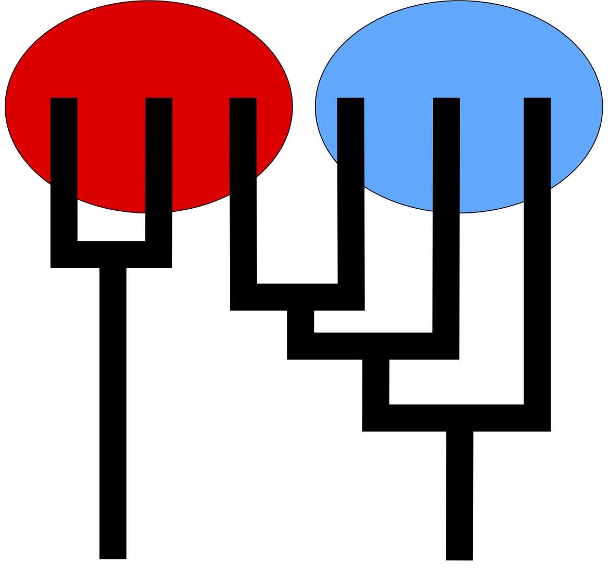
This tutorial has three sections:
If you are in the course: all material is available in the folder
moledata/migrate_tutorial
If you are not in the course: Download the necessary files from here and unpack the tutorial_material.zip file; you have now a directory migrate_tutorial
Or you can use wget to download the package directly to your homedirectory using this command:
wget http://www.peterbeerli.com/workshops/mbl/2018/tutorial_material.zip
unzip tutorial_material.zip
cd migrate_tutorial[first 30 minutes]
migrate is a Bayesian population genetics inference program that is based on the structured coalescence. It uses DNA/RNA sequence data or microsatellite data. It can run on computer clusters (using parallel software tools based on the MPI standard). It is distributed as Opensource (MIT license) from Migrate’s main website .
migrate can estimate parameters, such as population sizes, immigration rates, and divergence times of fairly complex models. Originally, it was a pure population genetics program, but with the introduction of divergence, it can handle closely related species, admixed populations, including potential hybrids as long as your data include multiple individuals of the same group. This tutorial will introduce you to these models.
migrate is distributed in source code and binaries for Mac and Windows computers. To run migrate efficiently on Linux clusters compile it yourself using the MPI libraries openmpi or mvapich2.
The Windows binary can run on Windows 7-11, although it may not be the most efficient way to run the program. If you have multiple loci and a computer with multiple cores (>4) use the parallel version.
migrate uses a menu to operate. The menu can save all options into a file which is called by default parmfile. The parmfile is a textfile that can be edited with a text editor; all lines starting with a # are comments and try to explain the options. You can write your own comments into the parmfile, but these will be overwritten when the parmfile is saved again through the menu. Starting the program can be done like this
migrate-n
migrate-n parmfile
migrate-n parmfile -nomenu
migrate-n -version
migrate-n -helpIf the program is started without the -nomenu option it displays the main menu
++++++++++++++++++++++++++++++++++++++++++++++++++++++++++++++++++
+ +
+ POPULATION SIZE, MIGRATION, DIVERGENCE, ASSIGNMENT, HISTORY +
+ Bayesian inference using the structured coalescent +
+ +
++++++++++++++++++++++++++++++++++++++++++++++++++++++++++++++++++
PDF output enabled [Letter-size]
Version 5.0(git:v5.0-30-g634f887) [March-20-2021]
Program started at Tue Oct 26 09:14:24 2021
=============================================================
MAIN MENU
=============================================================
D Data type currently set to: DNA sequence model
I Input/Output formats and Event reporting
P Parameters [start, migration model]
S Search strategy
W Write a parmfile
Q Quit the program
To change the settings type the letter for the menu to change
Start the program with typing Yes or Y
===> Each submenu will handle options concerning Data, Run parameters, and Population model among other things.
The MPI version is printing out less information than the single computer version, here an example of a log while running:
23:38:13 Burn-in of 200000 steps (Locus: 1/2, Replicate: 1/5)
23:38:15 Burn-in complete in 22 seconds
23:39:00 Sampling of 100000 steps (Locus: 1/2, Replicate: 1/5)
23:39:15 Sampling complete in 181 seconds
23:39:33 Sampling: prognosed end of run is 23:55 July 08 2016 [0.077777 done])
Parameter Acceptance Current PropWindow AutoCorr ESS
------------ ---------- ------------ ---------- -------- --------
Theta_1 0.085 0.00008 0.016 0.520 211.18
Theta_2 0.110 0.00211 0.024 0.515 214.11
M_2->1 0.759 982.58556 85.061 0.956 15.08
Genealogies 0.100 -3210.29272 --- 0.781 82.36The output will be printed into two files that are called by default outfile and outfile.pdf (the name can be changed through the menu). There is an example outfile.pdf here.
[about 15 minutes]
migrate uses an adjacancy matrix to define the interactions among populations.
The defaults in migrate are to estimate all population sizes \(\Theta\) and all immigration rates \(M\) independently.
For example a 3-population model where all populations A, B, and C exchange migrants at individual rates can be specified like this:
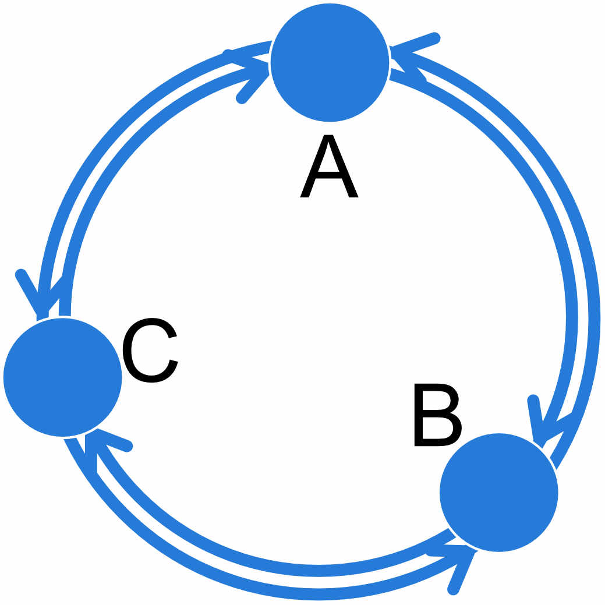
| A | B | C | |
|---|---|---|---|
| A | x | x | x |
| B | x | x | x |
| C | x | x | x |
Of course, this is not all that informative, but it is the default.
There are many ways to specify different structured models,
migrate has a set of options to help with that:
More examples:
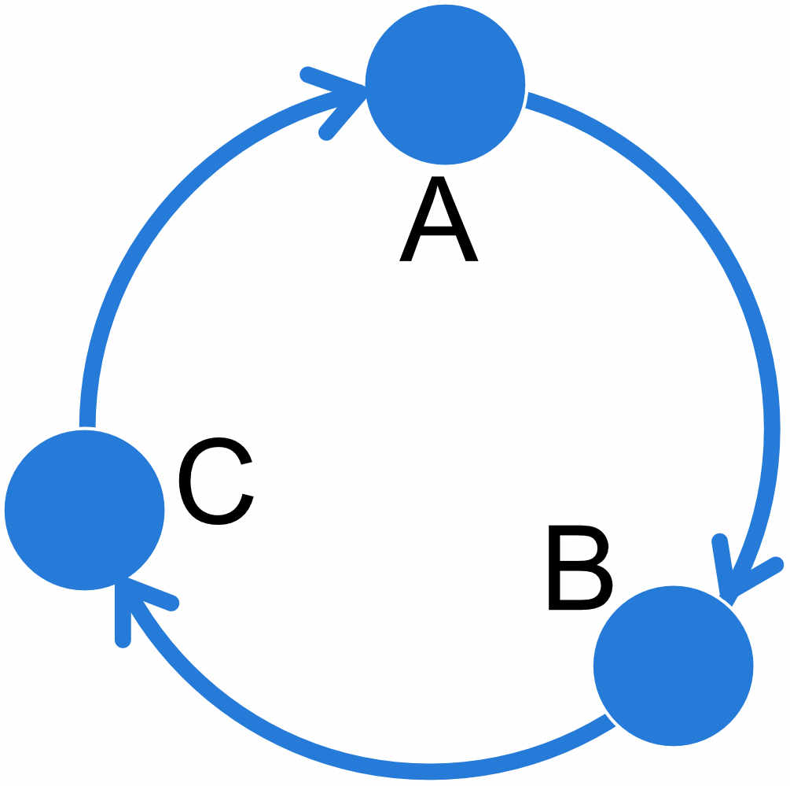
| A | B | C | |
|---|---|---|---|
| A | x | 0 | x |
| B | x | x | 0 |
| C | 0 | x | x |
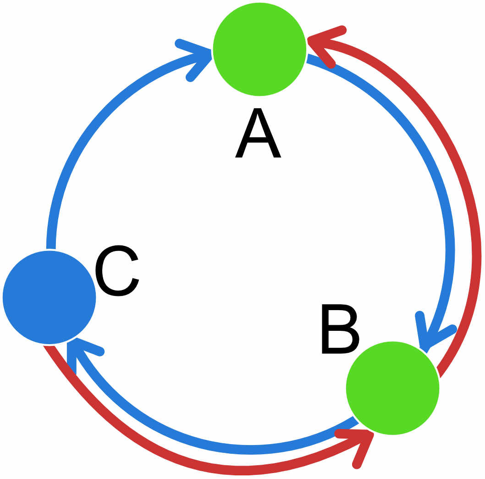
| A | B | C | |
|---|---|---|---|
| A | e | b | a |
| B | a | e | b |
| C | 0 | a | x |
REMINDER: the populations specified on the row of the adjacency matrix are the receiving populations; populations on the columns are the sending populations; thus in the circular unidirectional stepping stone example above, population A receives migrants from population C and we estimate the parameter \(M_{C\rightarrow A}\), population B receives migrants from population A and we estimate \(M_{A\rightarrow B}\) etc.
Click on the question to reveal the answer, but write down the answer before you peek :-).
1. specify the matrix for a 2-population system with unidirectional migration from 2 \(\rightarrow\) 1
custom-migration={** 0*}
2. specify a migration matrix for a 5-population system where population 1 and 5 are on a mainland, population 2 is an island close to 1, population 4 is close to 5, and population 3 is far out in the sea but closest to 2. ‘Close’ means reachable by rafting, and once on an island, it will be difficult to get off again.
custom-migration={*000* **000 0**00 000** *000*}
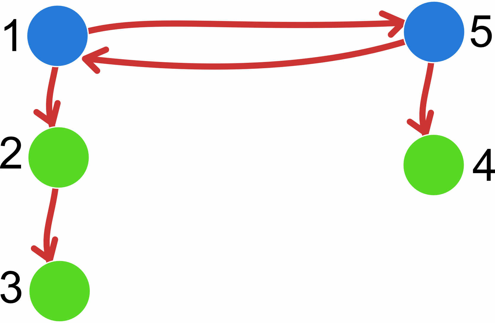
For the divergence specification, we also use the adjacency matrix. For example, if we have a model where the populations do not exchange migrants, we could specify the matrix like this
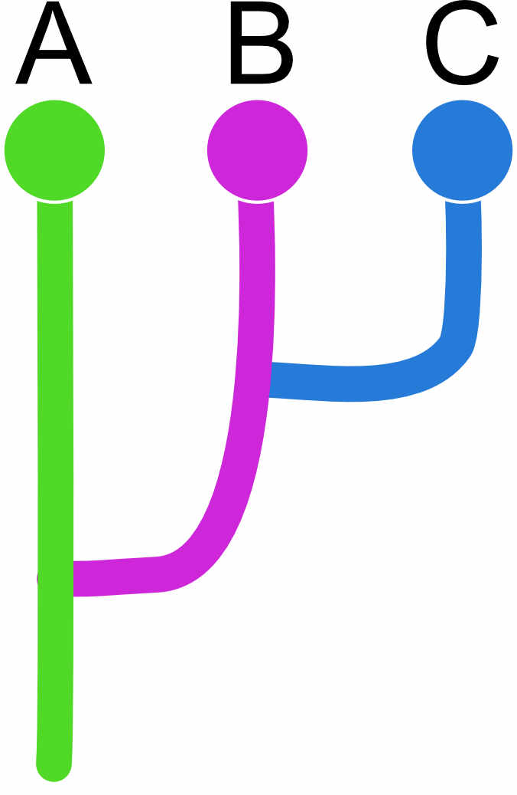
| A | B | C | |
|---|---|---|---|
| A | x | 0 | 0 |
| B | d | x | 0 |
| C | 0 | d | x |
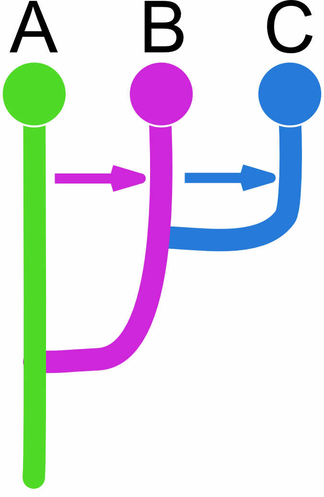
| A | B | C | |
|---|---|---|---|
| A | x | 0 | 0 |
| B | D | x | 0 |
| C | 0 | D | x |
Migration is problematic, and models with immigration and divergence may need additional ancestral populations to allow the estimation to be identifiable. Here is an example that needs ancestral population to get better estimates of divergence and migration.
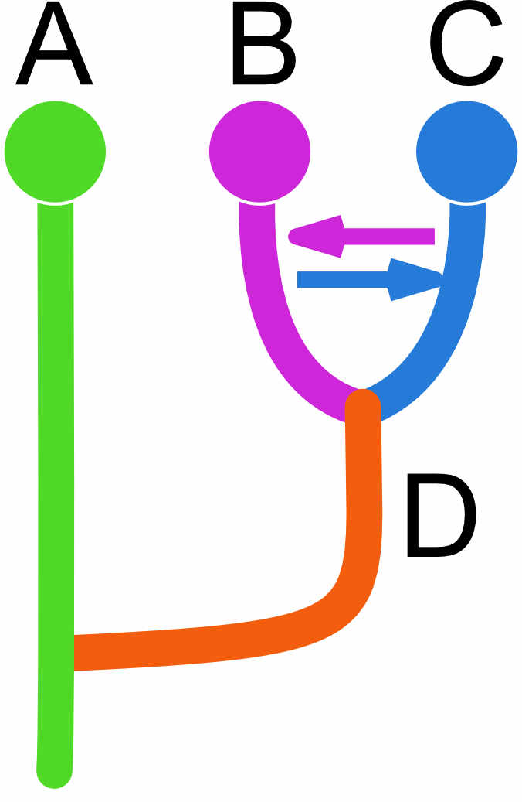
| A | B | C | D | |
|---|---|---|---|---|
| A | x | 0 | 0 | 0 |
| B | 0 | x | x | t |
| C | 0 | x | x | t |
| D | d | 0 | 0 | x |
migrate has a menu to enter this adjacency matrix, but given the many options, it may seem easier for complex scenarios to edit the parameter file (it is a text file) directly. the option is named
custom-migration and contains the adjacency matrix, for example, the example from above looks like this
custom-migration={ x000 0xxt 0xxt d00x}If a diagonal element is set to zero, the program will crash! There are also models that will not work well or fail. All models essentially need to be able to end in one common ancestor; for example, we may be tempted to code an admixture example like this
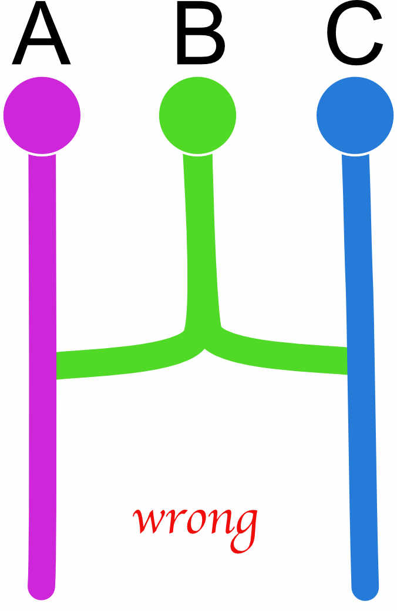
| A | B | C | |
|---|---|---|---|
| A | x | 0 | 0 |
| B | d | x | d |
| C | 0 | 0 | x |
but this will not work well because we force to have two roots, and this can lead to failures during the run, and one can code this better as this (a) or this (b)
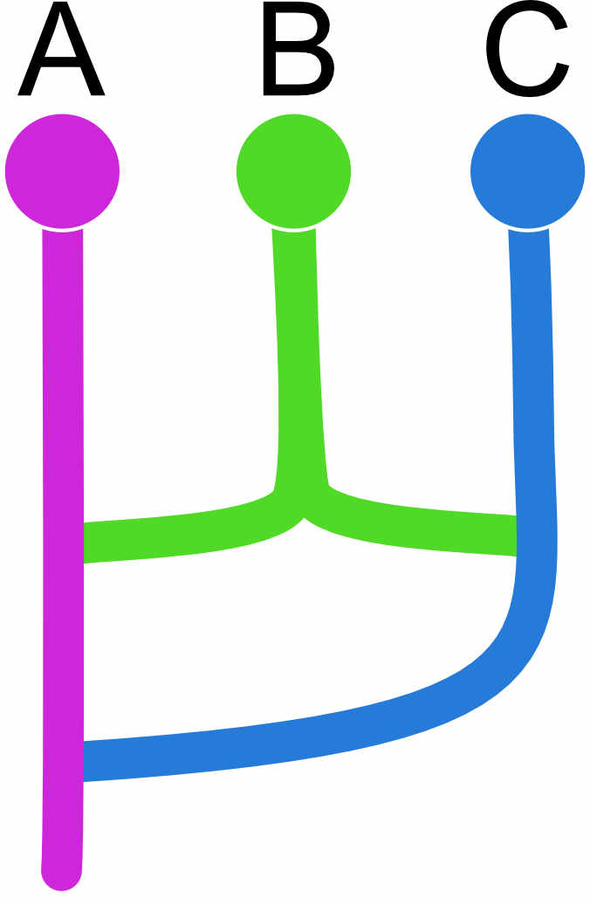
| (a) | A | B | C |
|---|---|---|---|
| A | x | 0 | 0 |
| B | d | x | d |
| C | d | 0 | x |
More complicated than (a) is this (b) model that forces a sequence of divergences. Both models should deliver similar values so, although (b) will estimate population size for population D.
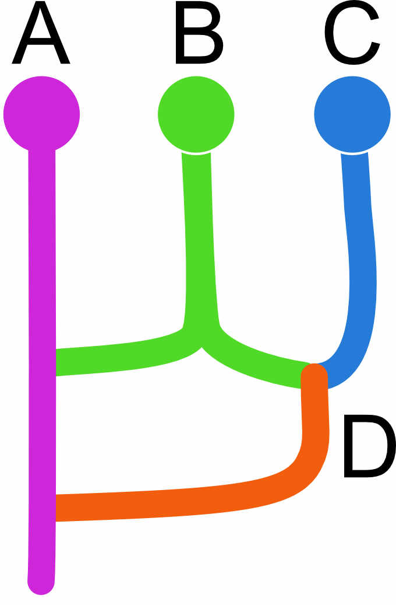
| (b) | A | B | C | D |
|---|---|---|---|---|
| A | x | 0 | 0 | 0 |
| B | d | x | d | 0 |
| C | 0 | 0 | x | d |
| D | d | 0 | 0 | x |
1. specify the matrix for two current populations A, B that share a common ancestor C
custom-migration={*0d 0*d 00*} or custom-migration={*0t 0*t 00*}
2. If the first questions is answered using ’d' what does that mean for the divergence times?
Specifying ’d' instead of ’t' allows the two current populations to have splits from the ancestor at different times.
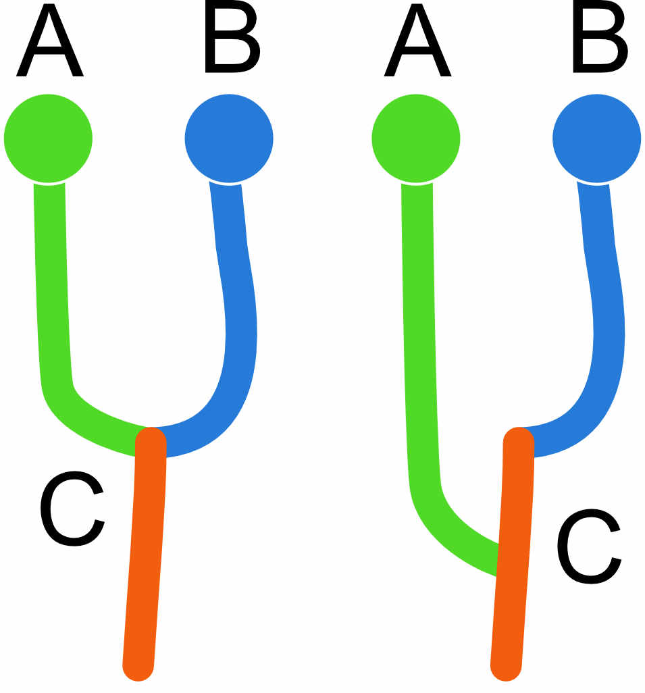
[about 1.5 hours] We use a real dataset of the zika virus, the data was gathered from the VIPR database. The localities include Africa, China, Brazil, Panama, Guatemala, Mexico, and Puerto Rico. There are only few sequences in some of the populations so they will be pooled in our analysis. To simplify we pool Panama, Guatemala, Mexico, and Puerto Rico into a population labeled ‘Mexico’. The general consensus about the spread of zika is from Africa to Asia to the Americas. They mainly used incidence data to come to that conclusion. Here we use complete genomic data of the viruses to select among models that represent alternative hypotheses.
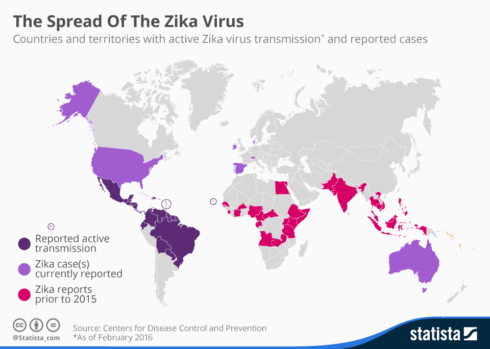
For each of the models you will need to edit a parmfile. I suggest that you follow the naming schemes in this tutorial.
There is a parmfile.template that specifies model 1 [to the east and north]. Use this template to form all the other models, for each these new models you will need to do the following steps:
cp parmfile.template parmfile_eastnorth
perl -p -i -e 's/template/eastnorth/g;' parmfile_eastnorth
# the parmfile_eastnorth does not need any editing! then execute
migrate-n parmfile_eastnorth -nomenuFor all other models you will use the same approach to change the template and generate the specific models. If you follow the instructions to the dot then all files will be set up correctly, if you insist on doing this by hand, you almost certainly will overwrite things and also use incorrect options.
cp parmfile.template parmfile_eastnorthmig
perl -p -i -e 's/template/eastnorthmig/g;' parmfile_eastnorthmig
<edit the parmfile_eastnorthmig: see instructions below>
migrate-n parmfile_eastnorthmig -nomenuthe parmfile needs to have a different custom-migration setting, search for the option, the current setting that does not include migration, edit it accordingly (using the example in the beginning of the tutorial, but recognize that we have a total of 4 population now, not three.
Once you have edited your copy compare with this
custom-migration={*000 D*00 0D*0 00D*}
cp parmfile.template parmfile_panmictic
perl -p -i -e 's/template/panmictic/g;' parmfile_panmictic
<edit the parmfile_panmictic, see below!>
migrate-n parmfile_panmictic -nomenuIn your editor search for the option population-relabel
it should look like this
# MBL tutorial dataset zika
# in the data file the order of the population is this:
# Africa
# Asia
# Brazil
# Mexico
# Puerto Rico
#
# population-relabel={assignment for each location in the infile}
# example is population-relabel={1 2 2}
#
population-relabel={1, 2, 3, 4, 4}
#For model 3 you need to reset to model to a single population, edit the option
Once you have edited your copy compare with this
population-relabel={1, 1, 1, 1, 1}
cp parmfile.template parmfile_west
perl -p -i -e 's/template/west/g;' parmfile_west
<edit the parmfile_west>
migrate-n parmfile_west -nomenuthe parmfile needs to have a different custom-migration setting, adjust it so so that we have population splits like this Africa \(\rightarrow\) Asia, Africa \(\rightarrow\) Brazil \(\rightarrow\) ‘Mexico’.
Once you have edited your copy compare with this
custom-migration={*000 d*00 d0*0 00d*}
cp parmfile.template parmfile_migration
perl -p -i -e 's/template/migration/g;' parmfile_migration
<edit the parmfile_migration>
migrate-n parmfile_migration -nomenuthe parmfile needs to have a different custom-migration setting, adjust to the n-island model with migration among all [!] populations
Once you edited your copy compare with this
custom-migration={**** **** **** ****}
cp parmfile.template parmfile_eastsplam
perl -p -i -e 's/template/eastsplam/g;' parmfile_eastsplam
<edit the parmfile_eastsplam>
migrate-n parmfile_eastsplam -nomenuthe parmfile needs to have a different custom-migration setting and a change of the population-relabel option. Change it so that we have Africa \(\rightarrow\) Asia \(\rightarrow\) Americas
the custom migration matrix should be a 3x3 matrix; in addition you will need to change the population-relabel option to pool Brazil and Mexico and Puerto Rico.
Once you edited your copy compare with this
population-relabel={1 2 3 3 3}
#… many options not shown here …
custom-migration={*00 d*0 0d*}
cp parmfile.template parmfile_twoways
perl -p -i -e 's/template/twoways/g;' parmfile_twoways
<edit the parmfile_twoways>
migrate-n parmfile_twoways -nomenuthe parmfile needs to have a different custom-migration setting and a change of the population-relabel option. Change it so that we have Africa \(\rightarrow\) Asia \(\rightarrow\) Americas and Africa \(\rightarrow\) Americas
the custom migration matrix should be a 3x3 matrix; in addition you will need to change the population-relabel option to pool Brazil and Mexico and Puerto Rico.
Once you edited your copy compare with this
population-relabel={1 2 3 3 3}
#… many options not shown here …
custom-migration={*00 d*0 dd*}
cp parmfile.template parmfile_own
perl -p -i -e 's/template/own/g;' parmfile_own
<edit the parmfile_own>
migrate-n parmfile_own -nomenuDesign your own model!
You have run several models and since we ran them not really long enough we wnat to see whether an average estimate of all students may give som intuition what is going on with the Zika virus. Each of the outfiles has a table of the marginal likelihoods. Report the value for your output files (you can report these before you have run all of them)
Report the number circled in RED. We will run an excel sheet to look at the model probabilities and marginal likelihoods reported by the class. [last 30 minutes]
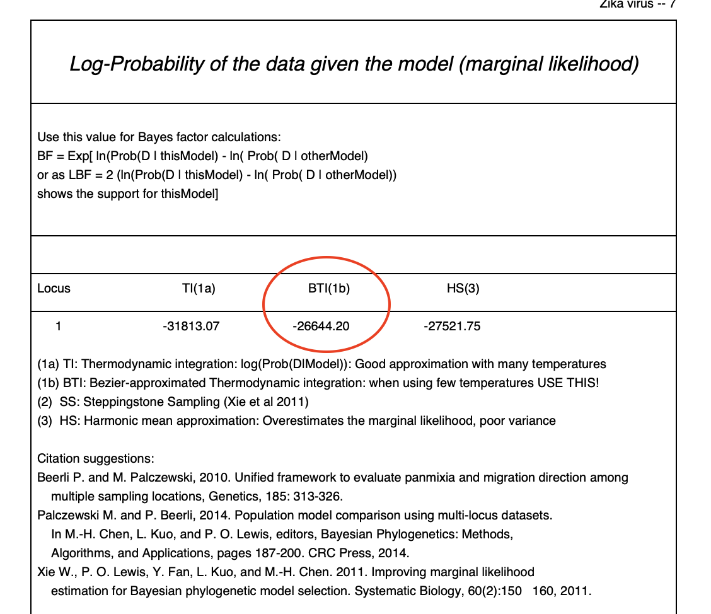
I have added a script that allows you to generate a table of the marginal likelihoods, the Bayes factors compared to the best model, and the model probabilities (probability weight). The script uses grep and a small python script that is doing the calculations. It will generate a table by extracting the marginal likelihoods from all outfiles in the directory. Call the script like this
./modelprobtable
Spoiler ALERT, if you click me before you have done the tutorial, you will see the order of the models and thus lose all the excitement about which model wins
Model Log(mL) LBF Model-probability
---------------------------------------------------------------
1:outfile_panmictic: -26722.61 -751.10 0.0000
2:outfile_migration: -26581.65 -610.14 0.0000
3:outfile_eastnorthmig: -26475.24 -503.73 0.0000
4:outfile_west: -26221.24 -249.73 0.0000
5:outfile_eastnorth: -26038.31 -66.80 0.0000
6:outfile_eastsplam: -25971.51 0.00 1.0000